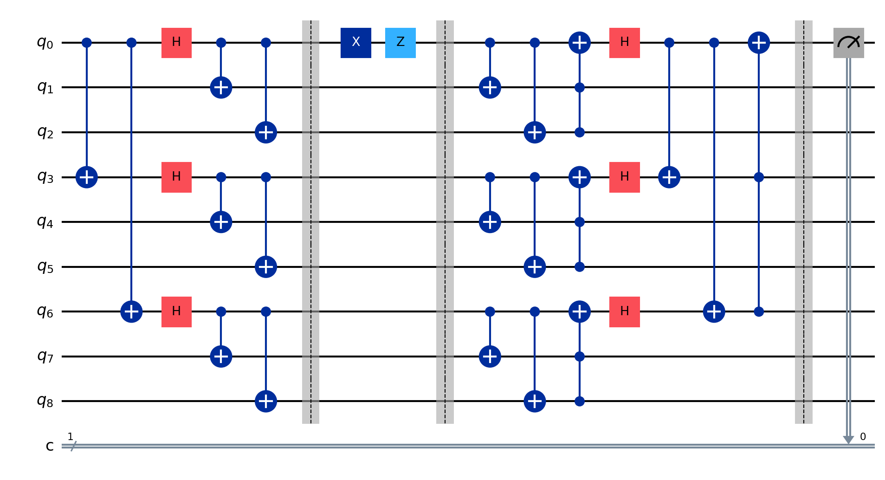

Shor's 9-Qubit Code
The 3-qubit code I built previously only protects a qubit from a bit-flip error, neglecting protection from phase-flips. Shor’s 9-qubit code is a quantum error correction method that uses nine physical qubits to protect one logical qubit from errors. It encodes the logical qubit by first applying a three-qubit code to correct phase errors, then encoding each of those qubits with a three-qubit code to correct bit errors, combining these steps into a single structure. This is called concatenation.
The code detects and corrects single-qubit errors, including bit flips, phase flips, or both, using syndrome measurements. For a bit flip, it checks pairs of qubits to identify the error location and applies a correction; for a phase flip, it examines blocks of three qubits to restore the state. This process also corrects any single-qubit error by treating it as one of these types. View the implementation here.
